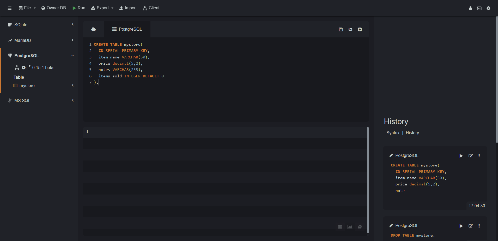
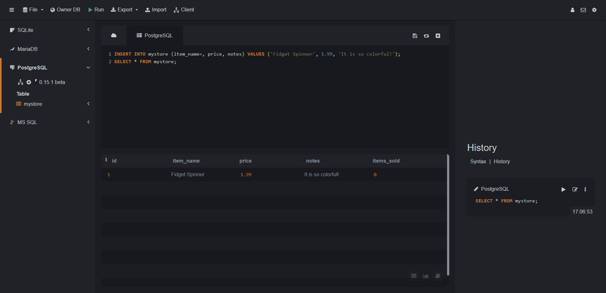

The PRIMARY KEY constraint uniquely identifies each record in a table.
Primary keys must contain UNIQUE values, and cannot contain NULL values.
Auto-increment allows a unique number to be generated automatically when a new record is inserted into a table.
So, you can use SERIAL (for PostgreSQL) or AUTO INCREMENT (for MySQL) as the primary key field that we would like to be created automatically every time a new record is inserted.
CREATE TABLE mystore(
id SERIAL PRIMARY KEY,
item_name VARCHAR(50),
price decimal(5,2),
notes VARCHAR(255),
items_sold INTEGER DEFAULT 0
);

Insert data to the table:
INSERT INTO mystore (item_name, price, notes) values ('Fidget Spinner', 1.99, 'It is so colorful!');
